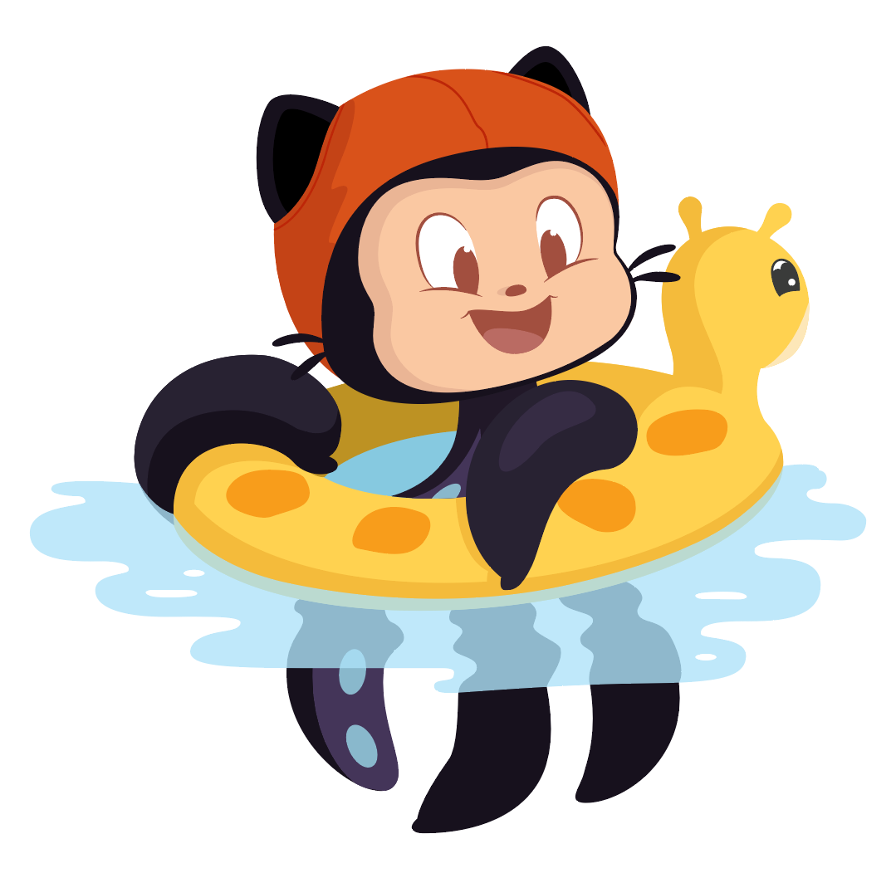
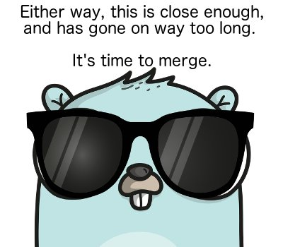
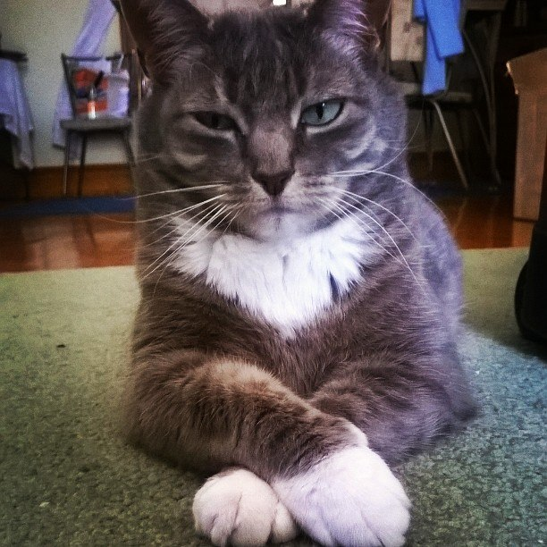

Open Source 101 Workshop
Carolyn Van Slyck and Blossom Coryat

Background
Why I chose open source
My Little Cluster Story
 carolynvanslyck.com/blog/2017/10/my-little-cluster
carolynvanslyck.com/blog/2017/10/my-little-cluster

Contribute - Code
- Bug Fixes
- Features
- Build Work
- Bumping dependency versions
- Improving local developer experience
- CI - Code linters
- CI - Windows
Contribute - Test
- Test coverage
- Integration / End-to-End tests
- Testability
Contribute - Doc
- Getting Started
- Core Concepts
- Configuration
- Troubleshooting
- Meta (contributing, CoC, reviewing, issue templates)
- Website Framework/Build
- Website Design
- Inline comments/doc
- Answered questions -> FAQ
- writethedocs.org
- docslikecode.com
Contribute - Project Management
- Attend community meetings
- Taking notes, recordings
- Labeling issues
- Closing stale issues or fixed issues
- Tracking milestones
- Putting together releases
carolynvs.com/oss-workshop
Contribute - Help
- Reading issues as they come and commenting where you can
- Answering questions
- Find gaps in the doc
- Identifying duplicates, related questions or previous answers
- Reproduce a bug report
- Trying out fixes
- Chatting with people on slack, helping other users
- Providing feedback on design proposals
- Ask clarifying questions on a code review
- Experience reports
Contribution Ladder

Select a Project
- You use it
- You are learning it
- You need to fix it
- You want to influence it
Lurk
(Re)set Your Expectations
- What's "normal"?
- Time Distortion Fields
- Know your peers
- Remember why you are here
Your First PR

Asking for Help

Your First PR ... Day 2

Casual Contributor

Build Trust
- Incremental, small changes
- The art of the follow-on PR
- Remember your own goals
- Check your ego
- Seek compomise ...
- ... know your boundaries
Member

Kind Code Reviews
The Crushing Guilt

Exit Strategy


Resources
- GitHub Open Source Guide
- Roads and Bridges:
The unseen labor behind our digital infrastructure - Stop Drinking Spoiled Milk
Thank you